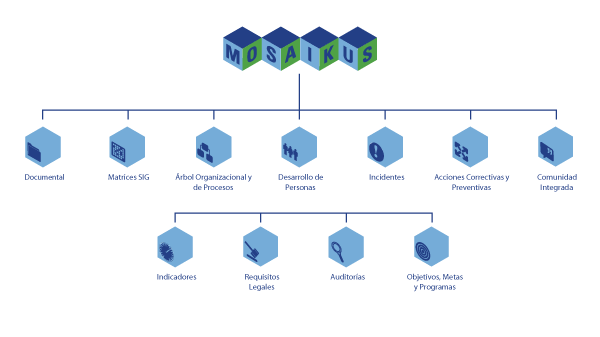

Mosaikus está conformado por una serie de aplicaciones interconectadas que facilitan la administración integral de los sistemas de gestión de las empresas. La estructura de Mosaikus le permite a las organizaciones utilizar de manera gradual y creciente las herramientas y modelos que se encuentran siempre disponibles.

Todas las aplicaciones o módulos que conforman Mosaikus se encuentran interconectados. Los principales pasos para su puesta en marcha:
Paso 1: Inicialmente se requerirá que la empresa defina los parámetros que personalizan y adecúan Mosaikus a la organización.
Paso 2: Definir e ingresar el árbol organizacional (Estructura Funcional) y el árbol de procesos (Principales Procesos y Subprocesos).
Paso 3: Ingresar los cargos funcionales de la organización.
Paso 4: Ingresar el personal de la empresa conforme a los requisitos de los módulos que se utilizarán.
Paso 5: Se encuentra listo para trabajar operacionalmente con MOSAIKUS.